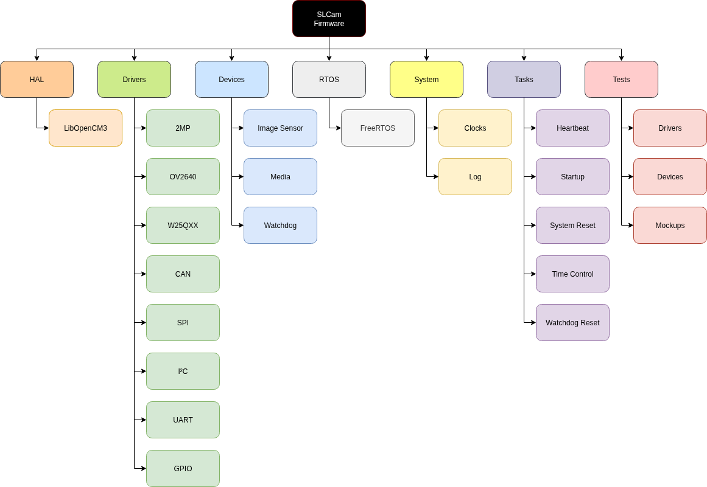
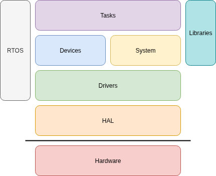

Firmware
This chapter describes the main characteristics of the firmware part of the SLCam module.
Product Tree
The product tree of the firmware part of the SLCam module is available in Fig. 11. This product tree follows the architecture of the firmware, being divided according to the firmware layers. Each box of the product tree represents a software module of the firmware.
{kind=link}

Fig. 11 Product tree of the firmware of the SLCam module.
Layers
The proposed software architecture is organized into layered abstractions, separating hardware-dependent components from high-level application logic. At the lowest level, the Hardware layer represents the physical components of the embedded system, including the microcontroller, peripherals, and communication interfaces. Above it, the Hardware Abstraction Layer (HAL) provides standardized interfaces that isolate the upper software layers from platform-specific details, improving portability and maintainability.
The Drivers layer implements low-level control and communication with hardware peripherals, while the Devices and System layers provide higher-level services, peripheral management, scheduling, timing, and operating system utilities. At the top of the architecture, the Tasks (Application) layer contains the application logic and device-specific functionalities. Additionally, the RTOS and Libraries layers act as cross-cutting components, providing task management, synchronization, reusable software modules, protocol stacks, and common utilities used throughout the system.
In Fig. 12 there is a diagram illustrating this layer hierarchy.
{kind=link}

Fig. 12 Layers of the SLCam system.
In the next subsections, a brief description of each layer is presented.
Hardware Abstraction Layer (HAL)
The HAL layer is the API libopencm3 developed STMicroelectronics; it includes register manipulating functions to accelerate development. The SLCam uses HAL to handle GPIO operations and serial communications such as SPI, UART, and \(I^2C\).
Drivers
Driver Layer is created to have the flexibility of the HAL layer but contains only the necessary abstraction to be still generic enough to support all the functionalities needed in Devices or other Drivers modules.
Devices
In this level of abstraction, the devices are used to create specific configurations with the Drivers Layer to build functions used in the Tasks layer. In opposition to the Drivers layer, the Devices do not communicate between themselves and are only used inside Tasks.
System
The System layer is used for housekeeping and management routines; it contains the system log. Its executions occur in almost all the SLCam abstraction layers (except the Tests layer), mostly for log purposes.
Tasks
Tasks are the RTOS threads equivalent and are the uppermost abstraction layer of code inside the SLCam flow of execution. Each task is designated a priority level, initial delay, period, and stack size as shown in Table 3.
Name |
Priority |
Initial Delay [ms] |
Period [ms] |
Stack [bytes] |
|---|---|---|---|---|
Startup |
Highest |
0 |
Aperiodic |
300 |
Watchdog Reset |
Lowest |
0 |
100 |
150 |
Heartbeat |
Lowest |
2000 |
500 |
150 |
System Reset |
Medium |
0 |
3600000 |
150 |
Time Control |
Medium |
1000 |
1000 |
150 |
CSP Server |
TBD |
0 |
TBC |
TBC |
Each of the tasks presented in Table 3 is described below:
Startup: This task is the first executed task when the system starts. All devices, libraries, and data structures are initialized in this task. When the execution is done, the remaining tasks of the system are allowed to execute.
Watchdog Reset: This task resets the internal watchdog timer at every 100 ms. The internal watchdog has a maximum count time of 500 ms.
Heartbeat: The heartbeat task keeps blinking a LED at a rate of 1 Hz during the execution of the system. Its purpose is to give visual feedback on the execution of the scheduler. This task does not have a specific purpose on the flight version of the module (the flight version of the PCB does not have LEDs).
System Reset: This task resets the microcontroller by software every hour. This can be useful to clean up possible wrong values in variables, clean up the RAM, etc.
Time Control: This task is responsible for the time management of the system. At every second, it increments the system time (epoch). Also, it saves the current system time in the non-volatile memory every minute.
CSP Server: TODO.
RTOS
The SLCam uses FreeRTOS kernel [4]. Using an RTOS-based kernel enables the system to regularly maintain routine functions such as housekeeping, sensor reading, checking for receptions, and dealing with specific delays used in hardware, such as the radio. The priority level of a task dictates who has the most preference for execution. Initial delay and period are used to determine the delay time to execute the task initialization after a boot; this regulates the time between the task executions. The stack is the amount of memory delimited to execute a task.
Libraries
The Libraries are used for algorithm purposes and are not related to any hardware. Their function removes the redundancy of creating multiple identical structures for different driver modules.
Tests
The Tests segment of the SLCam firmware project is responsible for ensuring the reliability, safety, and correctness of the developed software throughout the entire development cycle. This module provides verification and validation mechanisms for both the Drivers and Devices layers, helping to detect implementation errors, interface inconsistencies, and hardware integration issues before deployment in the final embedded platform. The testing strategy is divided into three complementary levels: static analysis, unit testing, and hardware integration testing.
The first level consists of static analysis tests, which are based on the MISRA C:2012 guidelines [1]. These tests aim to enforce safe and predictable programming practices for embedded C applications, reducing the probability of undefined behavior, memory corruption, portability problems, and runtime failures. The project uses the Cppcheck static analysis tool [2] to automatically inspect the source code and verify compliance with MISRA recommendations and additional code quality rules. Static analysis is performed without executing the firmware, allowing the detection of issues related to type safety, pointer usage, control flow, resource management, and software maintainability at early development stages. This process significantly contributes to improving software robustness and facilitating long-term maintenance of the firmware.
The second level is composed of unit tests, implemented using the Cmocka framework [3]. In this stage, each software module is tested individually in isolation from the hardware platform. Hardware-dependent interfaces are replaced by mockups, allowing the validation of algorithms, state machines, communication protocols, and internal logic without requiring the physical embedded system. This approach enables deterministic and repeatable tests, simplifies debugging, and accelerates the development process by allowing early detection of software defects during implementation.
Finally, the project includes hardware integration tests, which validate the interaction between the firmware and the real embedded hardware. These tests verify the correct operation of peripheral interfaces, external devices, timing constraints, and communication buses under real execution conditions. Integration testing is particularly important for confirming that the low-level drivers and device abstractions operate correctly with the target hardware, ensuring proper synchronization between software and physical components.
To improve development workflow reliability and enforce continuous software validation, the project integrates automated testing pipelines directly into the GitHub repository through GitHub Actions. Both the static analysis procedures using Cppcheck and the unit tests based on Cmocka are automatically executed for every commit and merge request submitted to the repository. This continuous integration approach allows developers to identify regressions and software defects immediately after code modifications, ensuring that new contributions do not compromise code quality, MISRA compliance, or existing functionalities. The automation of these verification stages also contributes to standardizing the development process and improving the overall maintainability and dependability of the SLCam firmware project.